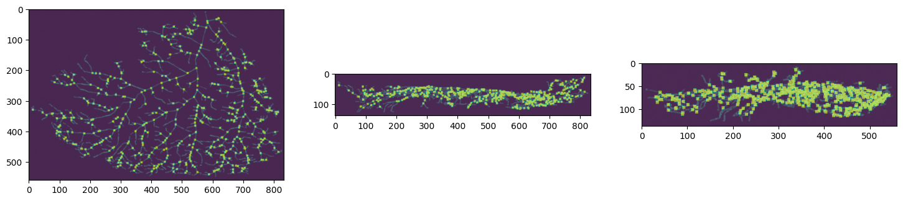
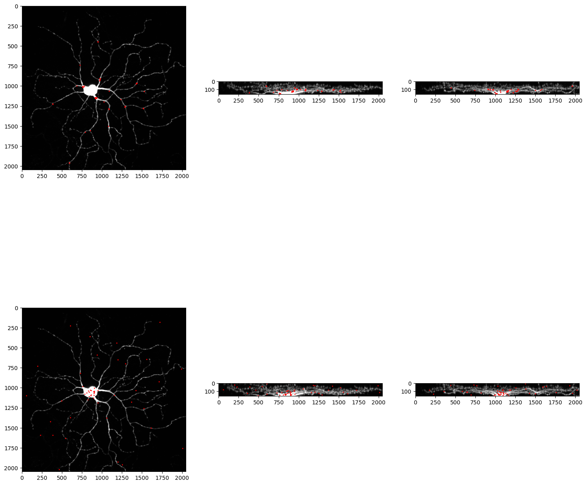
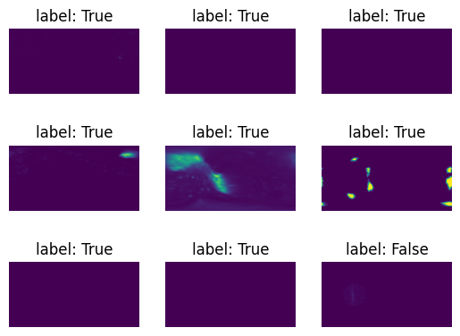
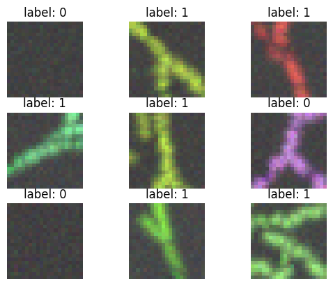
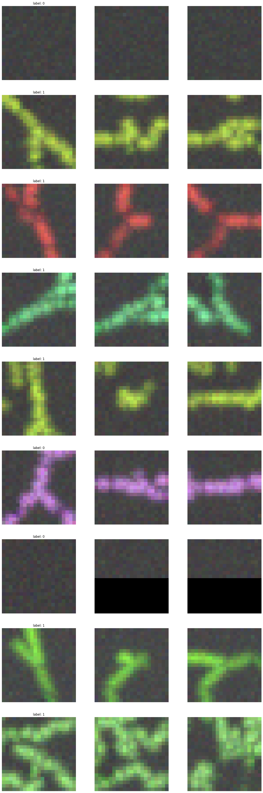

Branch Classifier
[1]:
%load_ext autoreload
%autoreload 2
%matplotlib inline
[2]:
import cProfile
from datetime import datetime
from glob import glob
import matplotlib.pyplot as plt
import numpy as np
import os
import pandas as pd
import pstats
import sys
import tifffile as tf
import torch
from torch.utils.data import DataLoader
from tqdm import tqdm
sys.path.append("../")
from data_prep import collect, load, draw, save, image
from data_prep.image import Image
from solvers import branch_classifier
import models
DATE = datetime.now().strftime("%m-%d-%y")
dtype = torch.float32
DEVICE = "cuda:0" if torch.cuda.is_available() else "cpu"
/home/bgray/anaconda3/envs/neurotrack/lib/python3.8/site-packages/tqdm/auto.py:21: TqdmWarning: IProgress not found. Please update jupyter and ipywidgets. See https://ipywidgets.readthedocs.io/en/stable/user_install.html
from .autonotebook import tqdm as notebook_tqdm
[11]:
seeds = glob(os.path.join('/nafs/dtward/bryson/data/simulated_neurons/neuromorpho_with_artifacts/8-STRESS_2w_Female_HIP_7', '*seeds.txt'))[0]
# Load seeds from text file into a list of integers
with open(seeds, 'r') as f:
seed_list = [[int(x) for x in line.strip().split(' ')] for line in f if line.strip()]
print(f"Loaded {len(seed_list)} seeds")
print(f"{seed_list}")
Loaded 1 seeds
[[18, 248, 343]]
[ ]:
import json
section_graph = glob(os.path.join('/nafs/dtward/bryson/data/simulated_neurons/neuromorpho_with_artifacts/8-STRESS_2w_Female_HIP_7', '*section_graph.json'))[0]
with open(section_graph, 'r') as f:
section_graph = json.load(f)
# Convert all keys from string to int
section_graph = {int(k): v for k, v in section_graph.items()}
[16]:
section_graph
[16]:
{'2': [3, 5, 10, 26, 35, 12, 68, 37, 51],
'3': [2, 5, 10, 26, 35, 12, 68, 37, 51],
'5': [2, 3, 10, 26, 35, 12, 68, 37, 51],
'10': [2, 3, 5, 26, 35, 12, 68, 37, 51],
'15': [22],
'22': [15],
'26': [2, 3, 5, 10, 35, 12, 68, 37, 51],
'35': [2, 3, 5, 10, 26, 12, 68, 37, 51],
'42': [43],
'46': [48],
'48': [46],
'55': [60],
'60': [55],
'65': [66],
'66': [65],
'70': [74],
'74': [70],
'12': [2, 3, 5, 10, 26, 35, 68, 37, 51],
'43': [42],
'53': [61],
'61': [53],
'68': [2, 3, 5, 10, 26, 35, 12, 37, 51],
'37': [2, 3, 5, 10, 26, 35, 12, 68, 51],
'51': [2, 3, 5, 10, 26, 35, 12, 68, 37]}
Collect branch classifier training data
Training data consists of volumetric image patches chosen randomly from the neuron node coordinates given
in the SWC file with an added small random translation. Image patches are labeled 1 if they are centered on
a branch point and 0 otherwise.
Get sample points from swc files then save sample spherical patches
[3]:
# Load SWC file data into python lists
# swc_dir = "/nafs/dtward/bryson/gold166_swc_scaled"
# swc_files = os.listdir(swc_dir)
swc_dir = "/nafs/dtward/bryson/data/neuromorpho"
swc_files = [f for x in os.walk(swc_dir) for f in glob(os.path.join(x[0], '*.swc'))]
swc_files = sorted(swc_files)
# img_dir = "/nafs/dtward/bryson/gold166_tifs_scaled/"
# img_files = os.listdir(img_dir)
img_dir = "/nafs/dtward/bryson/data/simulated_neurons/neuromorpho_with_artifacts"
img_files = [f for x in os.walk(img_dir) for f in glob(os.path.join(x[0], '*image.tif'))]
img_files = sorted(img_files)
section_labels_files = [f for x in os.walk(img_dir) for f in glob(os.path.join(x[0], '*sections.tif'))]
section_labels_files = sorted(section_labels_files)
density_files = [f for x in os.walk(img_dir) for f in glob(os.path.join(x[0], '*density.tif'))]
density_files = sorted(density_files)
branch_mask_files = [f for x in os.walk(img_dir) for f in glob(os.path.join(x[0], '*branches.tif'))]
branch_mask_files = sorted(branch_mask_files)
# out_dir = os.path.expanduser("~/bmap/gold166_classifier_data/")
out_dir = os.path.expanduser("~/bmap/data/simulated_neurons/neuromorpho_branch_classifier_with_artifacts")
if not os.path.exists(out_dir):
os.makedirs(out_dir, exist_ok=True)
print(f"Created directory: {out_dir}")
if not os.path.exists(os.path.join(out_dir, "observations")):
os.makedirs(os.path.join(out_dir, "observations"))
Test branch extraction methods
Acquire large square patches for on-the-fly patch extraction
[5]:
# Specify one image
# img_file = img_files[4]
swc_file = swc_files[4]
img_file = [f for f in img_files if f.split('/')[-1].split('_image')[0] == swc_file.split('/')[-1].split('.')[0]][0]
img = tf.imread(img_file)
# get its branches
# swc_file = [f for f in swc_files if f.split('/')[-1].split('.')[0] == img_file.split('/')[-1].split('_image')[0]][0]
swc_list = load.swc(swc_file)
sections, section_graph = load.parse_swc(swc_list)
branches, terminals = load.get_critical_points(swc_list, sections)#, length_threshold=4.0)
sections, branches, terminals, scale = load.adjust_neuron_coords(sections, branches, terminals)
loading file: /nafs/dtward/bryson/data/neuromorpho/borst/CNG version/dHSN_02l.CNG.swc
removing 21 branches
[6]:
shape = img.shape[1:]
branch_mask = Image(torch.zeros((1,)+shape, dtype=torch.bool))
for point in branches:
# r = point[3].item() #/ xy_scale
branch_mask.draw_point(point[:3], radius=3, binary=True, value=1, channel=0)
[7]:
# visualize the image with branch mask
fig, ax = plt.subplots(1,3, figsize=(18,18))
ax[0].imshow(img.max(1).transpose(1,2,0))
ax[0].imshow(branch_mask.data[0].amax(0), alpha=0.5)
ax[1].imshow(img.max(2).transpose(1,2,0))
ax[1].imshow(branch_mask.data[0].amax(1), alpha=0.5)
ax[2].imshow(img.max(3).transpose(1,2,0))
ax[2].imshow(branch_mask.data[0].amax(2), alpha=0.5)
[7]:
<matplotlib.image.AxesImage at 0x7f4843813820>

[9]:
# how many total branches are there?
n_branches = 0
for swc_file in swc_files[:11]:
swc_list = load.swc(swc_file)
sections, section_graph = load.parse_swc(swc_list)
branches, terminals = load.get_critical_points(swc_list, sections)
n_branches += len(branches)
print(f'There are a total of {n_branches*2} branches.')
loading file: /nafs/dtward/bryson/data/neuromorpho/allen cell types/CNG version/646805498_transformed.CNG.swc
removing 0 branches
loading file: /nafs/dtward/bryson/data/neuromorpho/baier/CNG version/150304_2_3_d.CNG.swc
removing 0 branches
loading file: /nafs/dtward/bryson/data/neuromorpho/baier/CNG version/20160916_BGUG_HuC_ltRFP_d7_F13.CNG.swc
removing 3 branches
loading file: /nafs/dtward/bryson/data/neuromorpho/beining/CNG version/35dpi_ipsi_infra_06.CNG.swc
removing 0 branches
loading file: /nafs/dtward/bryson/data/neuromorpho/borst/CNG version/dHSN_02l.CNG.swc
removing 21 branches
loading file: /nafs/dtward/bryson/data/neuromorpho/briggs/CNG version/Bub_9-13_c1.CNG.swc
removing 0 branches
loading file: /nafs/dtward/bryson/data/neuromorpho/buskila/CNG version/MC-Aged-Cont-S2.CNG.swc
removing 0 branches
loading file: /nafs/dtward/bryson/data/neuromorpho/buskila/CNG version/MC-Aged-cont-S1.CNG.swc
removing 0 branches
loading file: /nafs/dtward/bryson/data/neuromorpho/buskila/CNG version/MC-Presymptomatic-SOD1-S3.CNG.swc
removing 0 branches
loading file: /nafs/dtward/bryson/data/neuromorpho/buskila/CNG version/SSC-Aged-control-S13.CNG.swc
removing 1 branches
loading file: /nafs/dtward/bryson/data/neuromorpho/buskila/CNG version/SSC-Aged-control-S8.CNG.swc
removing 0 branches
There are a total of 1704 branches.
[30]:
# create annotations
rng = np.random.default_rng(0)
annotations_ = pd.read_csv(os.path.join(out_dir, f"branch_classifier_{'neuromorpho'}_{DATE}_annotations.csv"))
annotations = {}
for i, row in annotations_.iterrows():
key = row["Unnamed: 0"]
value = row[1]
annotations[key] = value
obs_id = 1704
for swc_file in tqdm(swc_files[11:], desc="Processing SWC files"):
swc_list = load.swc(swc_file)
sections, section_graph = load.parse_swc(swc_list)
branches, terminals = load.get_critical_points(swc_list, sections)
sections, branches, terminals, scale = load.adjust_neuron_coords(sections, branches, terminals)
img_file = [f for f in img_files if f.split('/')[-1].split('_image')[0] == swc_file.split('/')[-1].split('.')[0]][0]
img = tf.imread(img_file)
img = Image(torch.from_numpy(img))
for branch in branches:
patch = img.crop(branch[:3], radius=10)[0]
fname = f'obs_{obs_id}.tif'
annotations[fname] = 1
tf.imwrite(os.path.join(out_dir, 'observations', fname), patch.data.numpy(), compression='zlib')
obs_id += 1
points = []
for section_id, section in sections.items():
points.append(section[:,0,:3])
points = np.concatenate(points, axis=0)
i = 0
while i < len(branches)//2 + len(branches)%2:
point = rng.choice(points)
# Check if this point is far enough from any branch point
# to avoid selecting branch points or points too close to branches
is_far_from_branches = True
distance = np.linalg.norm(branches[:,:3] - point[None])
distance = distance.min()
if distance < 7.0: # Minimum distance from branches
is_far_from_branches = False
break
if is_far_from_branches:
i += 1
# Crop patch from image at this point
patch = img.crop(point[:3], radius=10)[0]
fname = f'obs_{obs_id}.tif'
annotations[fname] = 0
tf.imwrite(os.path.join(out_dir, 'observations', fname), patch.data.numpy(), compression='zlib')
obs_id += 1
else:
continue
# get len(branches)//2 non-neuron points
section_labels_file = [f for f in section_labels_files if f.split('/')[-1].split('_sections')[0] == swc_file.split('/')[-1].split('.')[0]][0]
section_labels = tf.imread(section_labels_file)
section_labels = section_labels[0]
i = 0
while i < len(branches)//2:
# select a random point in the img
# Get random coordinates within image dimensions
# Generate random coordinates within image bounds
z = rng.integers(0, section_labels.shape[0])
y = rng.integers(0, section_labels.shape[1])
x = rng.integers(0, section_labels.shape[2])
# Check if this point is outside neuron (section_labels == 0)
if section_labels[z, y, x] == 0:
i += 1
point = np.array([z, y, x]) # Save as [z,y,x,r] format
# Crop patch from image at this point
patch = img.crop(point[:3], radius=10)[0]
fname = f'obs_{obs_id}.tif'
annotations[fname] = 0
tf.imwrite(os.path.join(out_dir, 'observations', fname), patch.data.numpy(), compression='zlib')
obs_id += 1
else:
continue
name = "neuromorpho"
data_permutation = torch.randperm(len(annotations))
test_idxs = data_permutation[:len(data_permutation)//5].tolist()
training_idxs = data_permutation[len(data_permutation)//5:].tolist()
training_annotations = {list(annotations)[i]: list(annotations.values())[i] for i in training_idxs}
test_annotations = {list(annotations)[i]: list(annotations.values())[i] for i in test_idxs}
# save
df = pd.DataFrame.from_dict(training_annotations, orient="index")
df.to_csv(os.path.join(out_dir, f"branch_classifier_{name}_{DATE}_training_labels.csv"))
df = pd.DataFrame.from_dict(test_annotations, orient="index")
df.to_csv(os.path.join(out_dir, f"branch_classifier_{name}_{DATE}_test_labels.csv"))
Processing SWC files: 0%| | 0/64 [00:00<?, ?it/s]
loading file: /nafs/dtward/bryson/data/neuromorpho/campos/CNG version/Astro-1.CNG.swc
removing 1 branches
Processing SWC files: 2%|▏ | 1/64 [00:05<05:44, 5.46s/it]
loading file: /nafs/dtward/bryson/data/neuromorpho/castanho_oliveira/CNG version/13_L3_C3_N5.CNG.swc
removing 0 branches
Processing SWC files: 3%|▎ | 2/64 [00:20<11:38, 11.27s/it]
loading file: /nafs/dtward/bryson/data/neuromorpho/charlet/CNG version/CeA_Astrocyte_12_003.CNG.swc
removing 0 branches
Processing SWC files: 5%|▍ | 3/64 [00:43<16:34, 16.30s/it]
loading file: /nafs/dtward/bryson/data/neuromorpho/charlet/CNG version/CeA_Astrocyte_3_021.CNG.swc
removing 0 branches
Processing SWC files: 6%|▋ | 4/64 [01:04<18:16, 18.28s/it]
loading file: /nafs/dtward/bryson/data/neuromorpho/chiang/CNG version/Cha-F-000302.CNG.swc
removing 0 branches
Processing SWC files: 8%|▊ | 5/64 [01:31<21:13, 21.59s/it]
loading file: /nafs/dtward/bryson/data/neuromorpho/chiang/CNG version/Cha-F-600090.CNG.swc
removing 0 branches
Processing SWC files: 9%|▉ | 6/64 [01:59<22:44, 23.53s/it]
loading file: /nafs/dtward/bryson/data/neuromorpho/defelipe/CNG version/M1KO_15.CNG.swc
removing 0 branches
Processing SWC files: 11%|█ | 7/64 [02:20<21:46, 22.92s/it]
loading file: /nafs/dtward/bryson/data/neuromorpho/denizet/CNG version/cort4c4pg1d.CNG.swc
removing 0 branches
Processing SWC files: 12%|█▎ | 8/64 [02:46<22:18, 23.90s/it]
loading file: /nafs/dtward/bryson/data/neuromorpho/denk/CNG version/orphan_3807.CNG.swc
removing 0 branches
Processing SWC files: 14%|█▍ | 9/64 [03:13<22:37, 24.69s/it]
loading file: /nafs/dtward/bryson/data/neuromorpho/dierssen/CNG version/WT_6mo_3_11.CNG.swc
removing 0 branches
Processing SWC files: 16%|█▌ | 10/64 [03:36<21:45, 24.18s/it]
loading file: /nafs/dtward/bryson/data/neuromorpho/diniz/CNG version/C13_1-6_80um_GFAP_Z-fixed0102_08-April16_C47.CNG.swc
removing 0 branches
Processing SWC files: 17%|█▋ | 11/64 [04:00<21:25, 24.26s/it]
loading file: /nafs/dtward/bryson/data/neuromorpho/eyewire/CNG version/skel_20220_sorted.CNG.swc
removing 0 branches
Processing SWC files: 19%|█▉ | 12/64 [05:28<37:50, 43.66s/it]
loading file: /nafs/dtward/bryson/data/neuromorpho/flyem/CNG version/KC-p-5303804.CNG.swc
removing 2 branches
Processing SWC files: 20%|██ | 13/64 [06:04<35:02, 41.23s/it]
loading file: /nafs/dtward/bryson/data/neuromorpho/gaspar/CNG version/1-CTR_2w_Female_Nac_6.CNG.swc
removing 7 branches
Processing SWC files: 22%|██▏ | 14/64 [06:30<30:40, 36.81s/it]
loading file: /nafs/dtward/bryson/data/neuromorpho/gaspar/CNG version/12-DEX-STRESS_male_Nac_7.CNG.swc
removing 0 branches
Processing SWC files: 23%|██▎ | 15/64 [06:37<22:34, 27.63s/it]
loading file: /nafs/dtward/bryson/data/neuromorpho/gaspar/CNG version/8-STRESS_2w_Female_HIP_7.CNG.swc
removing 0 branches
Processing SWC files: 25%|██▌ | 16/64 [06:57<20:23, 25.48s/it]
loading file: /nafs/dtward/bryson/data/neuromorpho/giniger/CNG version/ABL-OE-14--ims.CNG.swc
removing 0 branches
Processing SWC files: 27%|██▋ | 17/64 [07:21<19:38, 25.08s/it]
loading file: /nafs/dtward/bryson/data/neuromorpho/guizzetti/CNG version/P3_CV3_79.CNG.swc
removing 0 branches
Processing SWC files: 28%|██▊ | 18/64 [07:42<18:04, 23.58s/it]
loading file: /nafs/dtward/bryson/data/neuromorpho/hamad/CNG version/pcs74_8.CNG.swc
removing 0 branches
Processing SWC files: 30%|██▉ | 19/64 [08:03<17:18, 23.08s/it]
loading file: /nafs/dtward/bryson/data/neuromorpho/hart/CNG version/2016-10-27_541_mir-1_day_3_3.CNG.swc
removing 0 branches
Processing SWC files: 31%|███▏ | 20/64 [08:24<16:23, 22.35s/it]
loading file: /nafs/dtward/bryson/data/neuromorpho/hart/CNG version/2016-10-27_541_mir-1_day_3_5.CNG.swc
removing 0 branches
Processing SWC files: 33%|███▎ | 21/64 [08:49<16:39, 23.24s/it]
loading file: /nafs/dtward/bryson/data/neuromorpho/hosseini/CNG version/Aged_mice_VAC-PBS10_58-DG-1.CNG.swc
removing 0 branches
Processing SWC files: 34%|███▍ | 22/64 [09:13<16:25, 23.46s/it]
loading file: /nafs/dtward/bryson/data/neuromorpho/jacobs/CNG version/194-2-6lw.CNG.swc
removing 0 branches
Processing SWC files: 36%|███▌ | 23/64 [09:42<17:06, 25.04s/it]
loading file: /nafs/dtward/bryson/data/neuromorpho/jefferis/CNG version/NNE1L.CNG.swc
removing 0 branches
Processing SWC files: 38%|███▊ | 24/64 [10:06<16:31, 24.79s/it]
loading file: /nafs/dtward/bryson/data/neuromorpho/jongbloets/CNG version/14dpi_WT2_S6_2.CNG.swc
removing 1 branches
Processing SWC files: 39%|███▉ | 25/64 [10:23<14:27, 22.25s/it]
loading file: /nafs/dtward/bryson/data/neuromorpho/kuddannaya/CNG version/Tracetest_N360_semicircle_Map2Tau_79_semi-auto_18.CNG.swc
removing 0 branches
Processing SWC files: 41%|████ | 26/64 [10:42<13:30, 21.33s/it]
loading file: /nafs/dtward/bryson/data/neuromorpho/la barbera/CNG version/1-4_14.CNG.swc
removing 0 branches
Processing SWC files: 42%|████▏ | 27/64 [10:58<12:08, 19.68s/it]
loading file: /nafs/dtward/bryson/data/neuromorpho/laBarbera_mercuri/CNG Version/1-4_14.CNG.swc
removing 0 branches
Processing SWC files: 44%|████▍ | 28/64 [11:02<09:00, 15.02s/it]
loading file: /nafs/dtward/bryson/data/neuromorpho/luikart/CNG version/C29421-A4-60DPI-TDA-I1-CreCell-3.CNG.swc
removing 0 branches
Processing SWC files: 45%|████▌ | 29/64 [11:17<08:44, 14.98s/it]
loading file: /nafs/dtward/bryson/data/neuromorpho/macdonald/CNG version/SD3.CNG.swc
removing 0 branches
Processing SWC files: 47%|████▋ | 30/64 [11:34<08:53, 15.69s/it]
loading file: /nafs/dtward/bryson/data/neuromorpho/mehder/CNG version/Rasha-CA1-Exp-April-2016-right-slide-55-secion-1.CNG.swc
removing 0 branches
Processing SWC files: 48%|████▊ | 31/64 [11:47<08:05, 14.71s/it]
loading file: /nafs/dtward/bryson/data/neuromorpho/nishitoh/CNG version/D2_C_22.CNG.swc
removing 4 branches
Processing SWC files: 50%|█████ | 32/64 [12:02<08:01, 15.06s/it]
loading file: /nafs/dtward/bryson/data/neuromorpho/prichard_singer/CNG version/MsJinx16_NoFlicker_1h_IBA1_NFkBinh_17.CNG.swc
removing 0 branches
Processing SWC files: 52%|█████▏ | 33/64 [12:25<08:56, 17.30s/it]
loading file: /nafs/dtward/bryson/data/neuromorpho/quinlan/CNG version/KQa4-12-2015-tracing.CNG.swc
removing 0 branches
Processing SWC files: 53%|█████▎ | 34/64 [12:49<09:44, 19.49s/it]
loading file: /nafs/dtward/bryson/data/neuromorpho/roysam/CNG version/farsight879.CNG.swc
removing 0 branches
Processing SWC files: 55%|█████▍ | 35/64 [13:11<09:45, 20.18s/it]
loading file: /nafs/dtward/bryson/data/neuromorpho/siegert/CNG version/CN_Development_P15_F_Animal01_Trace040.CNG.swc
removing 0 branches
Processing SWC files: 56%|█████▋ | 36/64 [13:30<09:11, 19.69s/it]
loading file: /nafs/dtward/bryson/data/neuromorpho/siegert/CNG version/CN_Development_P22_F_Animal03_Trace009.CNG.swc
removing 0 branches
Processing SWC files: 58%|█████▊ | 37/64 [13:50<08:57, 19.91s/it]
loading file: /nafs/dtward/bryson/data/neuromorpho/siegert/CNG version/CN_Development_P22_M_Animal03_Trace047.CNG.swc
removing 0 branches
Processing SWC files: 59%|█████▉ | 38/64 [14:13<09:03, 20.89s/it]
loading file: /nafs/dtward/bryson/data/neuromorpho/siegert/CNG version/DG_5xFAD_3mpos_F_Animal02_Trace178.CNG.swc
removing 0 branches
Processing SWC files: 61%|██████ | 39/64 [14:31<08:15, 19.83s/it]
loading file: /nafs/dtward/bryson/data/neuromorpho/siegert/CNG version/DG_5xFAD_6mpos_M_Animal03_Trace080.CNG.swc
removing 0 branches
Processing SWC files: 62%|██████▎ | 40/64 [14:48<07:33, 18.91s/it]
loading file: /nafs/dtward/bryson/data/neuromorpho/siegert/CNG version/DG_Adulthood_Control_F_Animal01_Trace891.CNG.swc
removing 0 branches
Processing SWC files: 64%|██████▍ | 41/64 [15:19<08:41, 22.66s/it]
loading file: /nafs/dtward/bryson/data/neuromorpho/siegert/CNG version/DG_CKp25_2w_M_Animal01_Trace048.CNG.swc
removing 0 branches
Processing SWC files: 66%|██████▌ | 42/64 [15:40<08:08, 22.19s/it]
loading file: /nafs/dtward/bryson/data/neuromorpho/siegert/CNG version/DG_Development_P22_M_Animal03_Trace060.CNG.swc
removing 0 branches
Processing SWC files: 67%|██████▋ | 43/64 [16:01<07:40, 21.94s/it]
loading file: /nafs/dtward/bryson/data/neuromorpho/siegert/CNG version/FC_Adulthood_Control_M_Animal01_Trace036.CNG.swc
removing 0 branches
Processing SWC files: 69%|██████▉ | 44/64 [16:26<07:33, 22.66s/it]
loading file: /nafs/dtward/bryson/data/neuromorpho/siegert/CNG version/FC_Development_P15_M_Animal02_Trace109.CNG.swc
removing 0 branches
Processing SWC files: 70%|███████ | 45/64 [16:52<07:32, 23.79s/it]
loading file: /nafs/dtward/bryson/data/neuromorpho/siegert/CNG version/FC_Development_P22_F_Animal03_Trace164.CNG.swc
removing 0 branches
Processing SWC files: 72%|███████▏ | 46/64 [17:23<07:47, 25.97s/it]
loading file: /nafs/dtward/bryson/data/neuromorpho/siegert/CNG version/OB_Adulthood_Control_F_Animal04_Trace056.CNG.swc
removing 0 branches
Processing SWC files: 73%|███████▎ | 47/64 [17:47<07:07, 25.18s/it]
loading file: /nafs/dtward/bryson/data/neuromorpho/siegert/CNG version/S1_5xFAD_3mpos_M_Animal03_Trace037.CNG.swc
removing 0 branches
Processing SWC files: 75%|███████▌ | 48/64 [18:12<06:42, 25.17s/it]
loading file: /nafs/dtward/bryson/data/neuromorpho/siegert/CNG version/S1_5xFAD_6mpos_F_Animal03_Trace003.CNG.swc
removing 0 branches
Processing SWC files: 77%|███████▋ | 49/64 [18:36<06:11, 24.79s/it]
loading file: /nafs/dtward/bryson/data/neuromorpho/siegert/CNG version/S1_CKp25_1w_M_Animal02_Trace067.CNG.swc
removing 0 branches
Processing SWC files: 78%|███████▊ | 50/64 [18:59<05:41, 24.39s/it]
loading file: /nafs/dtward/bryson/data/neuromorpho/siegert/CNG version/S1_CKp25_6w_F_Animal02_Trace063.CNG.swc
removing 0 branches
Processing SWC files: 80%|███████▉ | 51/64 [19:28<05:36, 25.85s/it]
loading file: /nafs/dtward/bryson/data/neuromorpho/siegert/CNG version/S1_CKp25_6w_M_Animal04_Trace008.CNG.swc
removing 0 branches
Processing SWC files: 81%|████████▏ | 52/64 [19:56<05:16, 26.36s/it]
loading file: /nafs/dtward/bryson/data/neuromorpho/siegert/CNG version/S1_Ovariectomy_Animal01_Trace032.CNG.swc
removing 0 branches
Processing SWC files: 83%|████████▎ | 53/64 [20:28<05:10, 28.19s/it]
loading file: /nafs/dtward/bryson/data/neuromorpho/siegert/CNG version/SN_5xFAD_6mpos_M_Animal03_Trace033.CNG.swc
removing 0 branches
Processing SWC files: 84%|████████▍ | 54/64 [20:49<04:20, 26.04s/it]
loading file: /nafs/dtward/bryson/data/neuromorpho/siegert/CNG version/SN_Adulthood_Control_M_Animal08_Trace005.CNG.swc
removing 0 branches
Processing SWC files: 86%|████████▌ | 55/64 [21:18<04:01, 26.83s/it]
loading file: /nafs/dtward/bryson/data/neuromorpho/siegert/CNG version/SN_Ovariectomy_Animal02_Trace052.CNG.swc
removing 0 branches
Processing SWC files: 88%|████████▊ | 56/64 [21:42<03:27, 25.95s/it]
loading file: /nafs/dtward/bryson/data/neuromorpho/siegert/Source-Version/OB_Adulthood_Control_F_Animal04_Trace056.swc
removing 0 branches
/home/bgray/neurotrack/notebooks/../data_prep/image.py:194: UserWarning: Center [136.434 84.564 404.52 ] is out of bounds for image shape torch.Size([235, 536, 396]). Translating to the nearest valid index.
warnings.warn(f"Center {center} is out of bounds for image shape {shape}. Translating to the nearest valid index.")
/home/bgray/neurotrack/notebooks/../data_prep/image.py:194: UserWarning: Center [134.313 85.32 414.264] is out of bounds for image shape torch.Size([235, 536, 396]). Translating to the nearest valid index.
warnings.warn(f"Center {center} is out of bounds for image shape {shape}. Translating to the nearest valid index.")
/home/bgray/neurotrack/notebooks/../data_prep/image.py:194: UserWarning: Center [141.663 55.941 464.951] is out of bounds for image shape torch.Size([235, 536, 396]). Translating to the nearest valid index.
warnings.warn(f"Center {center} is out of bounds for image shape {shape}. Translating to the nearest valid index.")
/home/bgray/neurotrack/notebooks/../data_prep/image.py:194: UserWarning: Center [167.059 41.563 481.401] is out of bounds for image shape torch.Size([235, 536, 396]). Translating to the nearest valid index.
warnings.warn(f"Center {center} is out of bounds for image shape {shape}. Translating to the nearest valid index.")
/home/bgray/neurotrack/notebooks/../data_prep/image.py:194: UserWarning: Center [187.842 95.449 397.359] is out of bounds for image shape torch.Size([235, 536, 396]). Translating to the nearest valid index.
warnings.warn(f"Center {center} is out of bounds for image shape {shape}. Translating to the nearest valid index.")
/home/bgray/neurotrack/notebooks/../data_prep/image.py:194: UserWarning: Center [144.365 257.331 438.092] is out of bounds for image shape torch.Size([235, 536, 396]). Translating to the nearest valid index.
warnings.warn(f"Center {center} is out of bounds for image shape {shape}. Translating to the nearest valid index.")
/home/bgray/neurotrack/notebooks/../data_prep/image.py:194: UserWarning: Center [153.276 70.991 512.348] is out of bounds for image shape torch.Size([235, 536, 396]). Translating to the nearest valid index.
warnings.warn(f"Center {center} is out of bounds for image shape {shape}. Translating to the nearest valid index.")
/home/bgray/neurotrack/notebooks/../data_prep/image.py:194: UserWarning: Center [125.402 93.636 436.545] is out of bounds for image shape torch.Size([235, 536, 396]). Translating to the nearest valid index.
warnings.warn(f"Center {center} is out of bounds for image shape {shape}. Translating to the nearest valid index.")
Processing SWC files: 89%|████████▉ | 57/64 [21:50<02:23, 20.52s/it]
loading file: /nafs/dtward/bryson/data/neuromorpho/steelman/CNG version/gw-4-image-3_22.CNG.swc
removing 0 branches
Processing SWC files: 91%|█████████ | 58/64 [22:08<01:58, 19.76s/it]
loading file: /nafs/dtward/bryson/data/neuromorpho/tenner/CNG version/7month-Arctic-C5aR1-KO-11_2.CNG.swc
removing 0 branches
Processing SWC files: 92%|█████████▏| 59/64 [22:21<01:28, 17.72s/it]
loading file: /nafs/dtward/bryson/data/neuromorpho/todd/CNG version/C242-01-08-14-B1.CNG.swc
removing 0 branches
Processing SWC files: 94%|█████████▍| 60/64 [22:46<01:19, 19.88s/it]
loading file: /nafs/dtward/bryson/data/neuromorpho/tolias/CNG version/L5MC-J130731a.CNG.swc
removing 1 branches
Processing SWC files: 95%|█████████▌| 61/64 [23:38<01:28, 29.58s/it]
loading file: /nafs/dtward/bryson/data/neuromorpho/wong/CNG version/L100P-GSK3-Het-9.CNG.swc
removing 0 branches
Processing SWC files: 97%|█████████▋| 62/64 [23:52<00:49, 24.98s/it]
loading file: /nafs/dtward/bryson/data/neuromorpho/yayon_soreq/CNG version/Cell_134_MPD_12_FT_10_XYZ_Sorted-swc_N3DFix-swc_4.CNG.swc
removing 0 branches
Processing SWC files: 98%|█████████▊| 63/64 [24:10<00:22, 22.92s/it]
loading file: /nafs/dtward/bryson/data/neuromorpho/yayon_soreq/CNG version/Cell_528_MPD_8_FT_10_XYZ_Sorted-swc_N3DFix-swc_1.CNG.swc
removing 0 branches
Processing SWC files: 100%|██████████| 64/64 [24:25<00:00, 22.90s/it]
[11]:
df = pd.DataFrame.from_dict(annotations, orient="index")
df.to_csv(os.path.join(out_dir, f"branch_classifier_{'neuromorpho'}_{DATE}_annotations.csv"))
Test spherical patch extraction
[14]:
# Setup
img = img_files[0]
img = tf.imread(os.path.join(img_dir,img))
img = img / img.max()
branch_coords = [np.array([x//2 for x in img.shape])]
permutations = [[0,1,2],
[0,2,1],
[1,2,0],
[1,0,2],
[2,0,1],
[2,1,0]]
# Create meshgrid for spherical coordinates
theta_res, phi_res = (180,360)
theta = np.linspace(0, np.pi, theta_res)
phi = np.linspace(0, 2*np.pi, phi_res)
theta_grid, phi_grid = np.meshgrid(theta, phi, indexing='ij')
# Convert to cartesian coordinates (points on a unit sphere)
x = np.sin(theta_grid) * np.cos(phi_grid)
y = np.sin(theta_grid) * np.sin(phi_grid)
z = np.cos(theta_grid)
[15]:
# Sample branch positive patches
with cProfile.Profile() as pr:
for i in range(len(branch_coords)):
spherical_patches = []
for r in range(3,55,3):
for perm in permutations:
patch = image.extract_spherical_patch(img, x, y, z, branch_coords[i], radius=r, permutation=perm)
spherical_patches.append(patch)
patch = np.stack(spherical_patches, axis=0)
stats = pstats.Stats(pr)
stats.sort_stats('cumulative').print_stats()
stats.print_stats()
5099 function calls (5098 primitive calls) in 0.574 seconds
Ordered by: cumulative time
ncalls tottime percall cumtime percall filename:lineno(function)
108 0.026 0.000 0.562 0.005 /home/bgray/neurotrack/notebooks/../data_prep/image.py:74(extract_spherical_patch)
108 0.001 0.000 0.503 0.005 /home/bgray/anaconda3/envs/neurotrack/lib/python3.8/site-packages/scipy/ndimage/_interpolation.py:358(map_coordinates)
108 0.497 0.005 0.497 0.005 {built-in method scipy.ndimage._nd_image.geometric_transform}
108 0.032 0.000 0.032 0.000 {built-in method numpy.array}
326/325 0.012 0.000 0.013 0.000 {built-in method numpy.core._multiarray_umath.implement_array_function}
1 0.000 0.000 0.012 0.012 <__array_function__ internals>:2(stack)
1 0.000 0.000 0.012 0.012 /home/bgray/anaconda3/envs/neurotrack/lib/python3.8/site-packages/numpy/core/shape_base.py:357(stack)
1 0.000 0.000 0.012 0.012 <__array_function__ internals>:2(concatenate)
108 0.001 0.000 0.004 0.000 /home/bgray/anaconda3/envs/neurotrack/lib/python3.8/site-packages/scipy/ndimage/_ni_support.py:73(_get_output)
108 0.002 0.000 0.002 0.000 {built-in method numpy.zeros}
108 0.000 0.000 0.001 0.000 /home/bgray/anaconda3/envs/neurotrack/lib/python3.8/site-packages/numpy/core/_dtype.py:321(_name_get)
216 0.000 0.000 0.001 0.000 <__array_function__ internals>:2(iscomplexobj)
108 0.000 0.000 0.001 0.000 /home/bgray/anaconda3/envs/neurotrack/lib/python3.8/site-packages/numpy/core/_dtype.py:307(_name_includes_bit_suffix)
108 0.000 0.000 0.001 0.000 <__array_function__ internals>:2(transpose)
108 0.000 0.000 0.000 0.000 /home/bgray/anaconda3/envs/neurotrack/lib/python3.8/site-packages/numpy/core/numerictypes.py:358(issubdtype)
324 0.000 0.000 0.000 0.000 {method 'item' of 'numpy.generic' objects}
108 0.000 0.000 0.000 0.000 /home/bgray/anaconda3/envs/neurotrack/lib/python3.8/site-packages/numpy/core/fromnumeric.py:601(transpose)
216 0.000 0.000 0.000 0.000 /home/bgray/anaconda3/envs/neurotrack/lib/python3.8/site-packages/numpy/core/numerictypes.py:284(issubclass_)
216 0.000 0.000 0.000 0.000 /home/bgray/anaconda3/envs/neurotrack/lib/python3.8/site-packages/numpy/lib/type_check.py:303(iscomplexobj)
108 0.000 0.000 0.000 0.000 /home/bgray/anaconda3/envs/neurotrack/lib/python3.8/site-packages/numpy/core/fromnumeric.py:51(_wrapfunc)
648 0.000 0.000 0.000 0.000 {built-in method builtins.issubclass}
108 0.000 0.000 0.000 0.000 {method 'reshape' of 'numpy.ndarray' objects}
108 0.000 0.000 0.000 0.000 {method 'format' of 'str' objects}
108 0.000 0.000 0.000 0.000 {method 'transpose' of 'numpy.ndarray' objects}
108 0.000 0.000 0.000 0.000 /home/bgray/anaconda3/envs/neurotrack/lib/python3.8/site-packages/numpy/core/_dtype.py:24(_kind_name)
108 0.000 0.000 0.000 0.000 /home/bgray/anaconda3/envs/neurotrack/lib/python3.8/site-packages/scipy/ndimage/_ni_support.py:36(_extend_mode_to_code)
432 0.000 0.000 0.000 0.000 {method 'append' of 'list' objects}
216 0.000 0.000 0.000 0.000 /home/bgray/anaconda3/envs/neurotrack/lib/python3.8/site-packages/numpy/lib/type_check.py:206(_is_type_dispatcher)
108 0.000 0.000 0.000 0.000 {built-in method builtins.getattr}
216 0.000 0.000 0.000 0.000 {built-in method numpy.asarray}
111 0.000 0.000 0.000 0.000 {built-in method builtins.len}
1 0.000 0.000 0.000 0.000 /home/bgray/anaconda3/envs/neurotrack/lib/python3.8/pstats.py:89(__init__)
1 0.000 0.000 0.000 0.000 /home/bgray/anaconda3/envs/neurotrack/lib/python3.8/site-packages/numpy/core/shape_base.py:432(<listcomp>)
1 0.000 0.000 0.000 0.000 /home/bgray/anaconda3/envs/neurotrack/lib/python3.8/pstats.py:99(init)
108 0.000 0.000 0.000 0.000 /home/bgray/anaconda3/envs/neurotrack/lib/python3.8/site-packages/numpy/core/fromnumeric.py:597(_transpose_dispatcher)
1 0.000 0.000 0.000 0.000 /home/bgray/anaconda3/envs/neurotrack/lib/python3.8/site-packages/numpy/core/shape_base.py:424(<setcomp>)
1 0.000 0.000 0.000 0.000 /home/bgray/anaconda3/envs/neurotrack/lib/python3.8/site-packages/numpy/core/shape_base.py:420(<listcomp>)
1 0.000 0.000 0.000 0.000 /home/bgray/anaconda3/envs/neurotrack/lib/python3.8/pstats.py:118(load_stats)
1 0.000 0.000 0.000 0.000 /home/bgray/anaconda3/envs/neurotrack/lib/python3.8/site-packages/numpy/core/shape_base.py:348(_stack_dispatcher)
108 0.000 0.000 0.000 0.000 {built-in method numpy.asanyarray}
1 0.000 0.000 0.000 0.000 /home/bgray/anaconda3/envs/neurotrack/lib/python3.8/site-packages/numpy/core/shape_base.py:207(_arrays_for_stack_dispatcher)
1 0.000 0.000 0.000 0.000 /home/bgray/anaconda3/envs/neurotrack/lib/python3.8/cProfile.py:51(create_stats)
2 0.000 0.000 0.000 0.000 {built-in method builtins.hasattr}
1 0.000 0.000 0.000 0.000 {built-in method builtins.isinstance}
1 0.000 0.000 0.000 0.000 {method 'disable' of '_lsprof.Profiler' objects}
1 0.000 0.000 0.000 0.000 {built-in method numpy.core._multiarray_umath.normalize_axis_index}
1 0.000 0.000 0.000 0.000 /home/bgray/anaconda3/envs/neurotrack/lib/python3.8/site-packages/numpy/core/multiarray.py:148(concatenate)
5099 function calls (5098 primitive calls) in 0.574 seconds
Ordered by: cumulative time
ncalls tottime percall cumtime percall filename:lineno(function)
108 0.026 0.000 0.562 0.005 /home/bgray/neurotrack/notebooks/../data_prep/image.py:74(extract_spherical_patch)
108 0.001 0.000 0.503 0.005 /home/bgray/anaconda3/envs/neurotrack/lib/python3.8/site-packages/scipy/ndimage/_interpolation.py:358(map_coordinates)
108 0.497 0.005 0.497 0.005 {built-in method scipy.ndimage._nd_image.geometric_transform}
108 0.032 0.000 0.032 0.000 {built-in method numpy.array}
326/325 0.012 0.000 0.013 0.000 {built-in method numpy.core._multiarray_umath.implement_array_function}
1 0.000 0.000 0.012 0.012 <__array_function__ internals>:2(stack)
1 0.000 0.000 0.012 0.012 /home/bgray/anaconda3/envs/neurotrack/lib/python3.8/site-packages/numpy/core/shape_base.py:357(stack)
1 0.000 0.000 0.012 0.012 <__array_function__ internals>:2(concatenate)
108 0.001 0.000 0.004 0.000 /home/bgray/anaconda3/envs/neurotrack/lib/python3.8/site-packages/scipy/ndimage/_ni_support.py:73(_get_output)
108 0.002 0.000 0.002 0.000 {built-in method numpy.zeros}
108 0.000 0.000 0.001 0.000 /home/bgray/anaconda3/envs/neurotrack/lib/python3.8/site-packages/numpy/core/_dtype.py:321(_name_get)
216 0.000 0.000 0.001 0.000 <__array_function__ internals>:2(iscomplexobj)
108 0.000 0.000 0.001 0.000 /home/bgray/anaconda3/envs/neurotrack/lib/python3.8/site-packages/numpy/core/_dtype.py:307(_name_includes_bit_suffix)
108 0.000 0.000 0.001 0.000 <__array_function__ internals>:2(transpose)
108 0.000 0.000 0.000 0.000 /home/bgray/anaconda3/envs/neurotrack/lib/python3.8/site-packages/numpy/core/numerictypes.py:358(issubdtype)
324 0.000 0.000 0.000 0.000 {method 'item' of 'numpy.generic' objects}
108 0.000 0.000 0.000 0.000 /home/bgray/anaconda3/envs/neurotrack/lib/python3.8/site-packages/numpy/core/fromnumeric.py:601(transpose)
216 0.000 0.000 0.000 0.000 /home/bgray/anaconda3/envs/neurotrack/lib/python3.8/site-packages/numpy/core/numerictypes.py:284(issubclass_)
216 0.000 0.000 0.000 0.000 /home/bgray/anaconda3/envs/neurotrack/lib/python3.8/site-packages/numpy/lib/type_check.py:303(iscomplexobj)
108 0.000 0.000 0.000 0.000 /home/bgray/anaconda3/envs/neurotrack/lib/python3.8/site-packages/numpy/core/fromnumeric.py:51(_wrapfunc)
648 0.000 0.000 0.000 0.000 {built-in method builtins.issubclass}
108 0.000 0.000 0.000 0.000 {method 'reshape' of 'numpy.ndarray' objects}
108 0.000 0.000 0.000 0.000 {method 'format' of 'str' objects}
108 0.000 0.000 0.000 0.000 {method 'transpose' of 'numpy.ndarray' objects}
108 0.000 0.000 0.000 0.000 /home/bgray/anaconda3/envs/neurotrack/lib/python3.8/site-packages/numpy/core/_dtype.py:24(_kind_name)
108 0.000 0.000 0.000 0.000 /home/bgray/anaconda3/envs/neurotrack/lib/python3.8/site-packages/scipy/ndimage/_ni_support.py:36(_extend_mode_to_code)
432 0.000 0.000 0.000 0.000 {method 'append' of 'list' objects}
216 0.000 0.000 0.000 0.000 /home/bgray/anaconda3/envs/neurotrack/lib/python3.8/site-packages/numpy/lib/type_check.py:206(_is_type_dispatcher)
108 0.000 0.000 0.000 0.000 {built-in method builtins.getattr}
216 0.000 0.000 0.000 0.000 {built-in method numpy.asarray}
111 0.000 0.000 0.000 0.000 {built-in method builtins.len}
1 0.000 0.000 0.000 0.000 /home/bgray/anaconda3/envs/neurotrack/lib/python3.8/pstats.py:89(__init__)
1 0.000 0.000 0.000 0.000 /home/bgray/anaconda3/envs/neurotrack/lib/python3.8/site-packages/numpy/core/shape_base.py:432(<listcomp>)
1 0.000 0.000 0.000 0.000 /home/bgray/anaconda3/envs/neurotrack/lib/python3.8/pstats.py:99(init)
108 0.000 0.000 0.000 0.000 /home/bgray/anaconda3/envs/neurotrack/lib/python3.8/site-packages/numpy/core/fromnumeric.py:597(_transpose_dispatcher)
1 0.000 0.000 0.000 0.000 /home/bgray/anaconda3/envs/neurotrack/lib/python3.8/site-packages/numpy/core/shape_base.py:424(<setcomp>)
1 0.000 0.000 0.000 0.000 /home/bgray/anaconda3/envs/neurotrack/lib/python3.8/site-packages/numpy/core/shape_base.py:420(<listcomp>)
1 0.000 0.000 0.000 0.000 /home/bgray/anaconda3/envs/neurotrack/lib/python3.8/pstats.py:118(load_stats)
1 0.000 0.000 0.000 0.000 /home/bgray/anaconda3/envs/neurotrack/lib/python3.8/site-packages/numpy/core/shape_base.py:348(_stack_dispatcher)
108 0.000 0.000 0.000 0.000 {built-in method numpy.asanyarray}
1 0.000 0.000 0.000 0.000 /home/bgray/anaconda3/envs/neurotrack/lib/python3.8/site-packages/numpy/core/shape_base.py:207(_arrays_for_stack_dispatcher)
1 0.000 0.000 0.000 0.000 /home/bgray/anaconda3/envs/neurotrack/lib/python3.8/cProfile.py:51(create_stats)
2 0.000 0.000 0.000 0.000 {built-in method builtins.hasattr}
1 0.000 0.000 0.000 0.000 {built-in method builtins.isinstance}
1 0.000 0.000 0.000 0.000 {method 'disable' of '_lsprof.Profiler' objects}
1 0.000 0.000 0.000 0.000 {built-in method numpy.core._multiarray_umath.normalize_axis_index}
1 0.000 0.000 0.000 0.000 /home/bgray/anaconda3/envs/neurotrack/lib/python3.8/site-packages/numpy/core/multiarray.py:148(concatenate)
Collect branch patch data
save coordinates and annotations
[25]:
collect.save_coordinates_and_annotations(swc_dir, img_dir, out_dir, samples_per_neuron=100, seed=0, branch_radius_filter=15.0)
1%| | 1/132 [03:16<7:09:07, 196.55s/it]
---------------------------------------------------------------------------
KeyboardInterrupt Traceback (most recent call last)
Cell In[25], line 1
----> 1 collect.save_coordinates_and_annotations(swc_dir, img_dir, out_dir, samples_per_neuron=100, seed=0, branch_radius_filter=15.0)
File ~/neurotrack/notebooks/../data_prep/collect.py:279, in save_coordinates_and_annotations(swc_dir, img_dir, out_dir, samples_per_neuron, seed, branch_radius_filter)
277 current_size = len(annotations)
278 for i in range(current_size, current_size + len(sample_points)*samples_per_neuron):
--> 279 k = i - current_size < len(branch_coords)
280 annotations[f"obs_{i}.tif"] = k
282 # # overwrite sample points and annotations after every file
283 # np.save(os.path.join(out_dir, f"sample_points_{date}.npy"), sample_points)
284 # # save annotations
(...)
295 # df = pd.DataFrame.from_dict(test_annotations, orient="index")
296 # df.to_csv(os.path.join(out_dir, f"branch_classifier_{name}_{date}_test_labels.csv"))
File ~/neurotrack/notebooks/../data_prep/collect.py:279, in save_coordinates_and_annotations(swc_dir, img_dir, out_dir, samples_per_neuron, seed, branch_radius_filter)
277 current_size = len(annotations)
278 for i in range(current_size, current_size + len(sample_points)*samples_per_neuron):
--> 279 k = i - current_size < len(branch_coords)
280 annotations[f"obs_{i}.tif"] = k
282 # # overwrite sample points and annotations after every file
283 # np.save(os.path.join(out_dir, f"sample_points_{date}.npy"), sample_points)
284 # # save annotations
(...)
295 # df = pd.DataFrame.from_dict(test_annotations, orient="index")
296 # df.to_csv(os.path.join(out_dir, f"branch_classifier_{name}_{date}_test_labels.csv"))
File _pydevd_bundle/pydevd_cython.pyx:1457, in _pydevd_bundle.pydevd_cython.SafeCallWrapper.__call__()
File _pydevd_bundle/pydevd_cython.pyx:701, in _pydevd_bundle.pydevd_cython.PyDBFrame.trace_dispatch()
File _pydevd_bundle/pydevd_cython.pyx:1395, in _pydevd_bundle.pydevd_cython.PyDBFrame.trace_dispatch()
File _pydevd_bundle/pydevd_cython.pyx:1344, in _pydevd_bundle.pydevd_cython.PyDBFrame.trace_dispatch()
File _pydevd_bundle/pydevd_cython.pyx:312, in _pydevd_bundle.pydevd_cython.PyDBFrame.do_wait_suspend()
File ~/anaconda3/envs/neurotrack/lib/python3.8/site-packages/debugpy/_vendored/pydevd/pydevd.py:2070, in PyDB.do_wait_suspend(self, thread, frame, event, arg, exception_type)
2067 from_this_thread.append(frame_custom_thread_id)
2069 with self._threads_suspended_single_notification.notify_thread_suspended(thread_id, thread, stop_reason):
-> 2070 keep_suspended = self._do_wait_suspend(thread, frame, event, arg, suspend_type, from_this_thread, frames_tracker)
2072 frames_list = None
2074 if keep_suspended:
2075 # This means that we should pause again after a set next statement.
File ~/anaconda3/envs/neurotrack/lib/python3.8/site-packages/debugpy/_vendored/pydevd/pydevd.py:2106, in PyDB._do_wait_suspend(self, thread, frame, event, arg, suspend_type, from_this_thread, frames_tracker)
2103 self._call_input_hook()
2105 self.process_internal_commands()
-> 2106 time.sleep(0.01)
2108 self.cancel_async_evaluation(get_current_thread_id(thread), str(id(frame)))
2110 # process any stepping instructions
KeyboardInterrupt:
[8]:
# visually check sample of branch points
sample_points_path = "/nafs/dtward/bryson/gold166_classifier_data/sample_points_03-26-25.npy"
sample_points = np.load(sample_points_path, allow_pickle=True)
sample_points = sample_points.item()
# get a branch point
fname = list(sample_points.keys())[3]
print(f'Opening: {fname}')
points = sample_points[fname]
img = tf.imread(os.path.join(img_dir, fname))
Opening: 080926a.tif
[24]:
fig, ax = plt.subplots(2,3, figsize=(18,18))
# branch points
ax[0][0].scatter(y=points[:50,1],x=points[:50,2], c='r', s=1)
ax[0][0].imshow(img.max(0), cmap='gray')
ax[0][1].scatter(y=points[:50,0],x=points[:50,2], c='r', s=1)
ax[0][1].imshow(img.max(1), cmap='gray')
ax[0][2].scatter(y=points[:50,0],x=points[:50,1], c='r', s=1)
ax[0][2].imshow(img.max(2), cmap='gray')
# non-branch points
ax[1][0].scatter(y=points[50:,1],x=points[50:,2], c='r', s=1)
ax[1][0].imshow(img.max(0), cmap='gray')
ax[1][1].scatter(y=points[50:,0],x=points[50:,2], c='r', s=1)
ax[1][1].imshow(img.max(1), cmap='gray')
ax[1][2].scatter(y=points[50:,0],x=points[50:,1], c='r', s=1)
ax[1][2].imshow(img.max(2), cmap='gray')
[24]:
<matplotlib.image.AxesImage at 0x7fc000e56e80>

save square patches
[29]:
img_dir = "/nafs/dtward/bryson/gold166_tifs_scaled/"
out_dir = os.path.expanduser("~/bmap/gold166_classifier_data/")
sample_points = np.load(os.path.join("/nafs/dtward/bryson/gold166_classifier_data/sample_points_03-26-25.npy"), allow_pickle=True)
sample_points = sample_points.item()
collect.save_square_patches(sample_points, img_dir, out_dir, radius=15)
0%| | 0/132 [00:00<?, ?it/s]100%|██████████| 132/132 [09:54<00:00, 4.51s/it]
save spherical patches
[30]:
out_dir = "/home/bgray/data/gold166_classifier_data"
sample_points = np.load("/nafs/dtward/bryson/gold166_classifier_data/sample_points_03-26-25.npy", allow_pickle=True)
sample_points = sample_points.item()
radii = torch.arange(3,34,6)
collect.save_spherical_patches(sample_points, img_dir, out_dir, radii)
100%|██████████| 132/132 [53:59<00:00, 24.54s/it]
View some example input images
[78]:
# observations = os.listdir(os.path.join(out_dir, "observations"))
# training_annotations = pd.read_csv(glob(os.path.join(out_dir, "*_labels.csv"))[0])
# ids = np.random.choice(len(training_annotations), size=9)
# sample = training_annotations.iloc[ids]
fig, ax = plt.subplots(3,3)
ax = ax.flatten()
for i in range(len(ax)):
img = tf.imread(os.path.join(out_dir,"observations", sample.iloc[i,0]))
# shell = 0
# shell = 6
shell = 30 # type: ignore
ax[i].imshow(img[shell], vmin=0, vmax=1.0)
ax[i].set_title(f"label: {sample.iloc[i,1].item()}")
ax[i].set_axis_off()

Train branch classifier
Instantiate dataloader for training and test datasets
Dataloaders use a weighted random sampler to balance classes. Additionally, the training dataset
adds a random permutation and flip to the image patch at retrieval.
[4]:
# set source data files paths
name = "neuromorpho"
date = "04-02-25"
training_labels_file = os.path.join(out_dir, f"branch_classifier_{name}_{date}_training_labels.csv")
test_labels_file = os.path.join(out_dir, f"branch_classifier_{name}_{date}_test_labels.csv")
img_dir = os.path.join(out_dir, f"observations")
# img_dir = os.path.join(out_dir, f"observations")
# instantiate training and test datasets
transform = branch_classifier.transform # random permutation and flip
training_data = branch_classifier.StateData(labels_file=training_labels_file, img_dir=img_dir, transform=transform)
test_data = branch_classifier.StateData(labels_file=test_labels_file, img_dir=img_dir)
# instantiate dataloaders
batchsize=50
training_dataloader = DataLoader(training_data, batch_size=batchsize)
test_dataloader = DataLoader(test_data, batch_size=batchsize)
[7]:
# out_dir = os.path.expanduser("~/bmap/gold166_classifier_data/")
weights_out = os.path.join(out_dir, "classifier_weights/")
if not os.path.exists(out_dir):
os.makedirs(out_dir, exist_ok=True)
lr = 1e-4
epochs = 1
# classifier = models.ResNet2D(models.ResidualBlock2D, [3, 4, 6, 3], in_channels=54, num_classes=1)
classifier = models.ResNet3D(models.ResidualBlock3D, [3, 4, 6, 3], in_channels=3, num_classes=1)
classifier = classifier.to(device=DEVICE, dtype=dtype)
branch_classifier.train(training_dataloader, test_dataloader, out_dir=weights_out, lr=lr, epochs=epochs, classifier=classifier, state_dict=None)
Save sample patches and labels from image files
[ ]:
# save sample patches from the images centered at the sample points
# image_dir = "/home/brysongray/data/simulated_neurons/neuromorpho_sub1_with_artifacts"
image_dir = "/home/brysongray/"
out_dir = "classifier_data"
if not os.path.exists(out_dir):
os.makedirs(out_dir, exist_ok=True)
name = "neuromorpho_test"
collect.collect_data(sample_points, image_dir, out_dir, name, date)
View some example input images
[31]:
out_dir
[31]:
'/home/bgray/bmap/data/simulated_neurons/neuromorpho_branch_classifier_with_artifacts'
[41]:
observations_dir = os.path.join(out_dir, "observations")
training_annotations = pd.read_csv(glob(os.path.join(out_dir, "*04-02-25_training_labels.csv"))[0])
ids = np.random.choice(len(training_annotations), size=9)
sample = training_annotations.iloc[ids]
fig, ax = plt.subplots(3,3)
ax = ax.flatten()
for i in range(len(ax)):
img_path = os.path.join(observations_dir, sample.iloc[i,0])
img = tf.imread(img_path) # type: ignore
ax[i].imshow(img.transpose(1,2,3,0).max(0))#, vmax=1.0, vmin=0.0)
ax[i].set_title(f"label: {sample.iloc[i,1].item()}")
ax[i].set_axis_off()

[42]:
# look at each patch with orthogonal views
fig, ax = plt.subplots(9,3)
fig.set_size_inches(18, 54)
for i in range(len(ax)):
img_path = os.path.join(observations_dir, sample.iloc[i,0])
img = tf.imread(img_path)
img = img.transpose(1,2,3,0) # type: ignore
ax[i][0].imshow(img.max(0))#, vmax=1.0, vmin=0.0)
ax[i][1].imshow(img.max(1))#, vmax=1.0, vmin=0.0)
ax[i][2].imshow(img.max(2))#, vmax=1.0, vmin=0.0)
ax[i][0].set_title(f"label: {sample.iloc[i,1].item()}")
ax[i][0].set_axis_off()
ax[i][1].set_axis_off()
ax[i][2].set_axis_off()
# ax[i].set_title(f"label: {sample.iloc[i,1].item()}")
# ax[i].set_axis_off()

Train branch classifier
Instantiate dataloader for training and test datasets
Dataloaders use a weighted random sampler to balance classes. Additionally, the training dataset
adds a random permutation and flip to the image patch at retrieval.
[ ]:
# set source data files paths
training_labels_file = "classifier_data/branch_classifier_neuromorpho_test_02-07-25_test_labels.csv"
test_labels_file = "classifier_data/branch_classifier_neuromorpho_test_02-07-25_training_labels.csv"
img_dir = "classifier_data/observations"
# instantiate training and test datasets
transform = branch_classifier.transform # random permutation and flip
training_data = branch_classifier.StateData(labels_file=training_labels_file,
img_dir=img_dir,
transform=transform)
test_data = branch_classifier.StateData(labels_file=test_labels_file,
img_dir=img_dir)
# instantiate dataloaders
training_dataloader = branch_classifier.init_dataloader(training_data)
test_dataloader = branch_classifier.init_dataloader(test_data)
View balanced data
[14]: